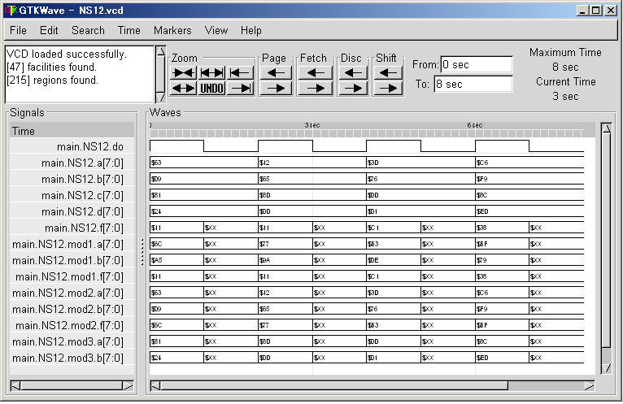

Submodules
NSL supports hiearachical logic design. In NSL, we call lower layer modules as submodules. The interface of a submodule is described in 'declare' sentense. It will be consist of external terminals and optional arguments for control terminals. To declare instances of a submodule, we can declare at facility_declaration part as:
submodule_name instance_name ;
Each submodule terminal can be refered or transfered a value. The terminal name is refered as:
instance_name.terminal_name
To invoke a control terminal of the submodule, we can use following syntax:
instance_name.control_input_terminal_name () ;
There is a special syntax that invoke a control terminal and refer a output terminal of the submodule.
instance_name.control_input_termainal_name(arguments).output_terminal_name
You can use this syntax as a reference to a terminal. Now we will see an example that uses NS11.nsl as a submodule. In this example, we use three submodule instances of NS11.
Example-NS12
We will make a simulation on this circuitry as following command:
# ./exe NS12
The result will be available on your console.
We will make a wave form on this circuitry as following command:
# ./exe -wave NS12
